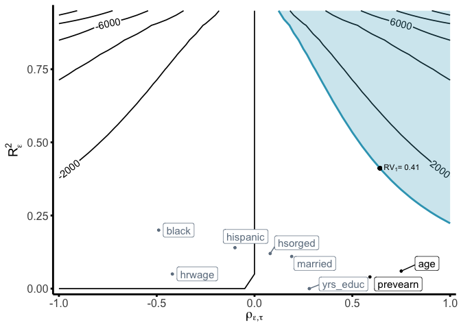

senseweight implements a set of sensitivity functions and tools to help researchers transparently conduct sensitivity analyses for weighted estimators. senseweight allows researchers to assess the sensitivity present in their weighted estimates to omitted confounders. Specific methods provided in senseweight include the following: (1) visualization tools to summarize sensitivity; (2) summary tables containing necessary sensitivity statistics; (3) formal benchmarking methods which allow researchers to use observed covariates to assess the plausibility of different confounders.
Installation
You can install the development version of senseweight from GitHub with:
# install.packages("devtools")
devtools::install_github("melodyyhuang/senseweight")Basic Usage
The example below illustrates how to use the senseweight package for external validity. Examples of how to use senseweight for internal validity or survey weighting are forthcoming.
library(senseweight)
# Load in JTPA data:
data(jtpa_women)
# Summarize sites
jtpa_women |>
group_by(site) |>
summarize(
length(prevearn),
across(
c(prevearn, age, married, hrwage, black, hispanic, hsorged, yrs_educ),
mean
)
)
#> # A tibble: 16 × 10
#> site `length(prevearn)` prevearn age married hrwage black hispanic
#> <chr> <int> <dbl> <dbl> <dbl> <dbl> <dbl> <dbl>
#> 1 CC 524 1855. 32.1 0.219 479. 0.101 0.693
#> 2 CI 190 2250. 33.5 0.253 458. 0.0684 0.0105
#> 3 CV 788 2192. 33.6 0.278 455. 0.173 0.00635
#> 4 HF 234 1997. 31.6 0.184 455. 0.432 0.0342
#> 5 IN 1392 3172. 34.9 0.193 466. 0.243 0.0194
#> 6 JC 81 2564. 30.6 0.136 531. 0.642 0.247
#> 7 JK 353 1928. 30.0 0.113 453. 0.912 0
#> 8 LC 485 3039. 33.9 0.258 464. 0.0165 0.165
#> 9 MD 177 2915. 34.6 0.181 480. 0.367 0
#> 10 MN 179 2215. 37.6 0.352 454. 0.00559 0.0782
#> 11 MT 38 1680. 33.8 0.395 474. 0 0.0526
#> 12 NE 636 2161. 31.7 0.0975 477. 0.511 0.0377
#> 13 OH 74 2568. 34.6 0.324 486. 0.0135 0
#> 14 OK 87 2320. 37.3 0.126 586. 0.759 0.0805
#> 15 PR 463 1783. 32.8 0.0842 506. 0.268 0.378
#> 16 SM 401 2997. 32.2 0.284 429. 0.0200 0.00249
#> # ℹ 2 more variables: hsorged <dbl>, yrs_educ <dbl>Assume researchers are interested in generalizing the results from the site of Omaha, Nebraska to the other 15 experimental sites:
site_name <- "NE"
df_site <- jtpa_women[which(jtpa_women$site == site_name), ]
df_else <- jtpa_women[which(jtpa_women$site != site_name), ]
# Estimate unweighted estimator:
model_dim <- estimatr::lm_robust(Y ~ T, data = df_site)
PATE <- coef(lm(Y ~ T, data = df_else))[2]
DiM <- coef(model_dim)[2]
# Generate weights using observed covariates:
df_all <- jtpa_women
df_all$S <- ifelse(jtpa_women$site == "NE", 1, 0)
model_ps <- WeightIt::weightit(
(1 - S) ~ . - site - T - Y,
data = df_all, method = "ebal", estimand = "ATT"
)
weights <- model_ps$weights[df_all$S == 1]
# Estimate IPW model:
model_ipw <- estimatr::lm_robust(Y ~ T, data = df_site, weights = weights)
ipw <- coef(model_ipw)[2]
# Estimate bound for var(tau):
m <- sqrt(var(df_site$Y[df_site$T == 1]) / var(df_site$Y[df_site$T == 0]))
# Since m > 1:
vartau <- var(df_site$Y[df_site$T == 1]) - var(df_site$Y[df_site$T == 0])Sensitivity Summary Measures
We can generate the sensitivity summary measures using the summarize_sensitivity function:
summarize_sensitivity(
weights = weights,
Y = df_site$Y,
Z = df_site$T,
sigma2 = vartau,
estimand = "PATE"
)
#> Unweighted Unweighted_SE Estimate SE RV sigma_tau_bound cor_w
#> Z 1107.35 982.65 1356.66 1417.3 0.36 2897.9 0.07The summarize_sensitivity function defaults to evaluating the robustness value at q=1, indicating a robustness value, relative to a bias equal to the point estimate. Researchers can specify different values for q in the function. In the generalization setting, researchers can modify the sigma2 bound and posit their own values for a plausible bound (given substantive justification). With no specification, sigma2 will be automatically calculated to be bound by var(Y(1)) + var(Y(0)).
Individual components of the sensitivity summaries can be computed as well:
# Calculate robustness value:
RV <- robustness_value(
estimate = ipw, b_star = 0, sigma2 = vartau, weights = weights
)
print(RV)
#> [1] 0.4113622Formal Benchmarking:
# Select weighting variables:
weighting_vars <- names(df_all)[which(!names(df_all) %in% c("site", "S", "Y", "T"))]
# Run bechmarking:
df_benchmark <- run_benchmarking(
weighting_vars,
data = df_all[, -1],
treatment = "T", outcome = "Y", selection = "S",
estimate = ipw,
RV = RV, sigma2 = vartau,
estimand = "PATE"
)
print(df_benchmark)
#> variable R2_benchmark rho_benchmark bias MRCS k_sigma_min k_rho_min
#> 1 prevearn 0.04 0.59 311.06 4.36 9.99 1.08
#> 2 age 0.06 0.75 479.43 2.83 6.91 0.85
#> 3 married 0.11 0.19 171.30 7.92 3.82 3.29
#> 4 hrwage 0.05 -0.42 -245.12 -5.53 8.32 -1.51
#> 5 black 0.20 -0.49 -627.68 -2.16 2.03 -1.30
#> 6 hispanic 0.14 -0.10 -96.85 -14.01 3.01 -6.66
#> 7 hsorged 0.12 0.08 74.52 18.20 3.51 7.94
#> 8 yrs_educ 0.00 0.28 22.79 59.54 408.90 2.26Generating the Bias Contour Plots
contour_plot(
var(weights), vartau, ipw, df_benchmark,
benchmark = TRUE, shade = TRUE,
shade_var = c("age", "prevearn"),
label_size = 4
) +
geom_point(aes(x = RV, y = sqrt(RV))) +
annotate("text",
x = RV - 0.01, y = sqrt(RV) + 0.02,
label = expression(RV[1] * "= 0.41"), hjust = 0, vjust = 0, size = 3
)
Shiny senseweight app
The senseweight package also includes a Shiny app that allows users to interactively conduct sensitivity analyses. The app is available at https://tiffanymtang.shinyapps.io/senseweight/. The app can also be run locally by running:
run_app()